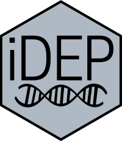

iDEP DesktopiDEP Desktop runs the full iDEP analysis on your machine for RNA-Seq, microarray, and proteomics data. R and every analysis package come bundled, so there is nothing else to set up.
Requires a Mac with Apple Silicon (M1 or newer). Intel Macs are not supported yet.
Installers are hosted on GitHub Releases. Install time includes the first-launch setup.
| Platform | Est. install time | Size | Download |
|---|---|---|---|
| WindowsWindows 10 or 11, 64-bit | 20-30 min | 1.1 GB | iDEP-2.5.0-win-x64.exe |
| MacApple Silicon (M1 or newer) | 10-15 min | 1.2 GB | iDEP-2.5.0-mac-arm64.dmg |
| LinuxUbuntu 24.04, x86_64. Steps below | 10-15 min | 1.1 GB | idep-2.5.0-linux-amd64.deb |
Tested on Ubuntu 24.04, x86_64.
.deb file, or run the command below.
.deb and will show "Installed" greyed out.$ cd ~/Downloads $ sudo apt install ./idep-2.5.0-linux-amd64.deb
The cd ~/Downloads line assumes the file is in your Downloads folder.
$ sudo dpkg -r idepgolem $ sudo dpkg --purge idepgolem
Older installers are on the releases page.